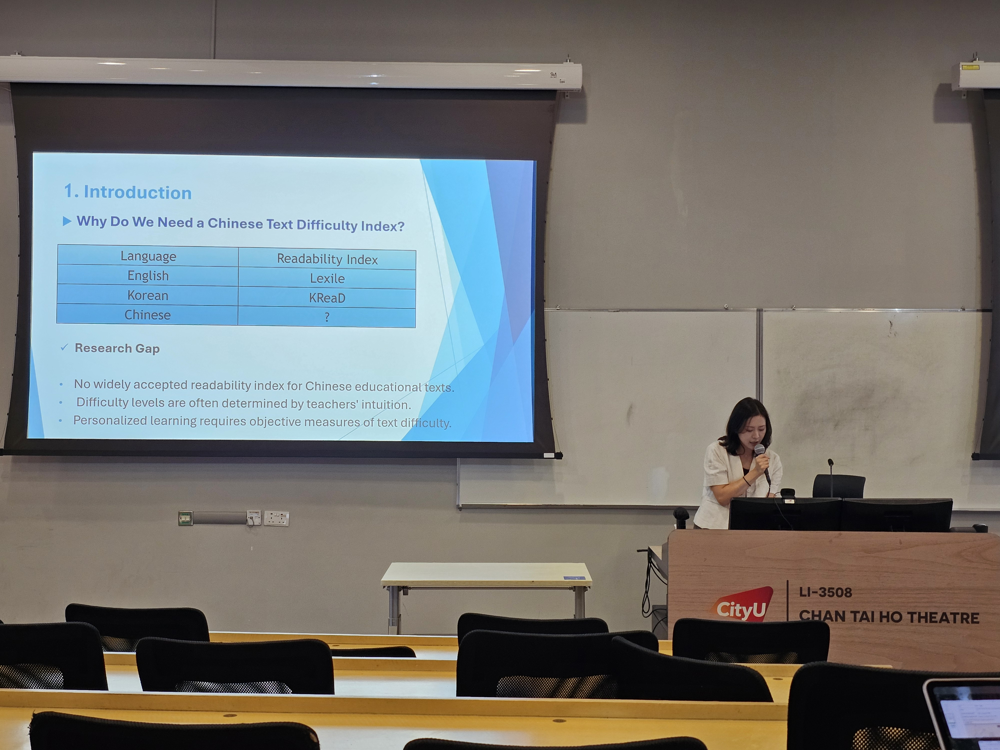
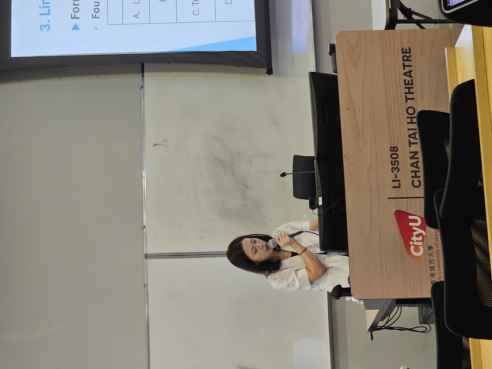

RESEARCH QUESTION
학습자는 중국어를 어떻게 읽고 쓰며, 그 과정의 어려움을 어떻게 설명하고 지원할 수 있는가?
Research Areas
Chinese Flow Lab의 핵심 연구 영역
READING
Chinese Reading Processing
- 읽기시간 · 이해도 · 오류 패턴
- 어휘 · 연어 · 통사 · 담화
- 인지적 난이도 분석
- 학습자 인지 프로파일링
- 개인맞춤형 읽기 지원
WRITING
AI-mediated Chinese Writing
- 초안 · 피드백 · 수정 · 최종본
- 프롬프트 활용 과정
- 쓰기 과정 데이터
- 학습자 쓰기 프로파일링
- AI 기반 맞춤형 쓰기 지원
Core Approach
학습 과정 데이터를 이해하고 설명하며 지원합니다.
Learning Analytics
읽기·쓰기 과정 데이터 분석
Learner Profiling
강점 · 취약점 · 처리 특성
XAI
어려움과 추천의 이유 설명
Generative AI
맞춤형 설명 · 피드백 · 지원
Research Flow
수행 데이터를 학습자 맞춤 지원으로 연결합니다.
1
PERFORM
읽기 · 쓰기 수행
2
ANALYZE
과정 데이터 분석
3
PROFILE
학습자 프로파일
4
EXPLAIN
XAI 설명
5
SUPPORT
AI 맞춤 지원
6
UPDATE
프로파일 갱신Chinese Flow Lab
연구와 학습을 하나의 플랫폼에서 연결합니다.
LEARNING
RESEARCH
Academic Background
Ph.D.
Linguistics and Applied Linguistics
Chinese as a Second Language Acquisition
Peking University
Dissertation
Processing of Chinese Subject/Object Relative Clauses in Korean Learners of Chinese
Research Interests
- Chinese Reading Processing
- AI-mediated Chinese Writing
- Cognitive Difficulty Modeling
- Chinese Literacy
- Corpus & NLP
- Learning Analytics
- Explainable AI
- Personalized Language Learning
Research & Academic Activities
Research · Teaching · Conference · Experiment

Academic Conference Presentation · City University of Hong Kong

Chinese Text Difficulty Research

Reading Processing Research

Experimental Research

AI-based Learning Research

Teaching & Learning

Writing & Research

Second Language Acquisition

Academic Activities